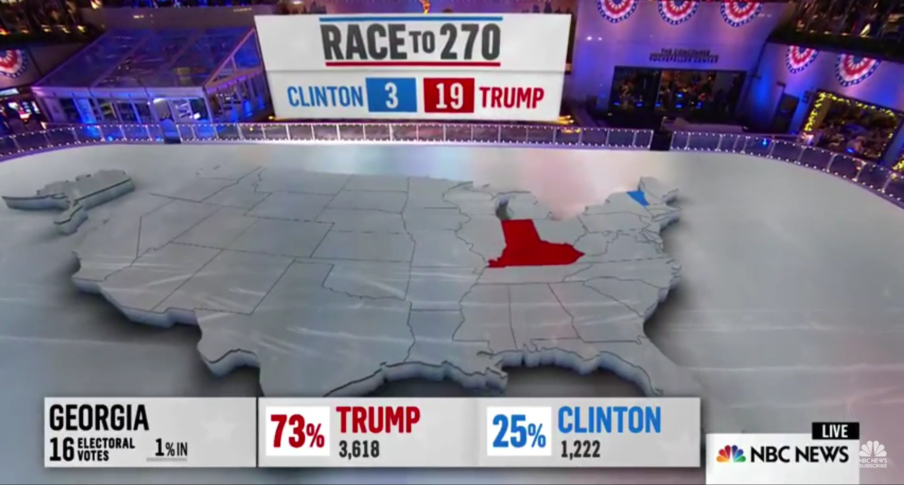
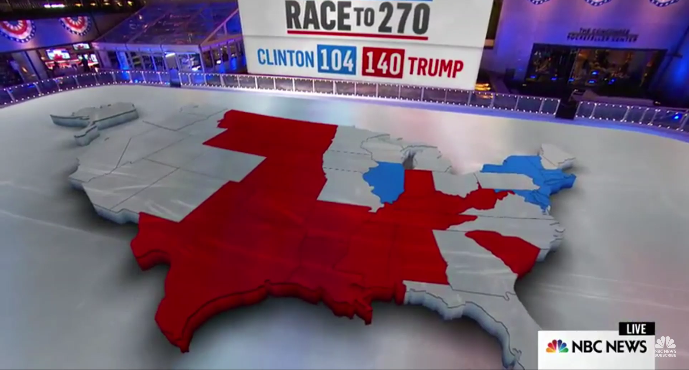
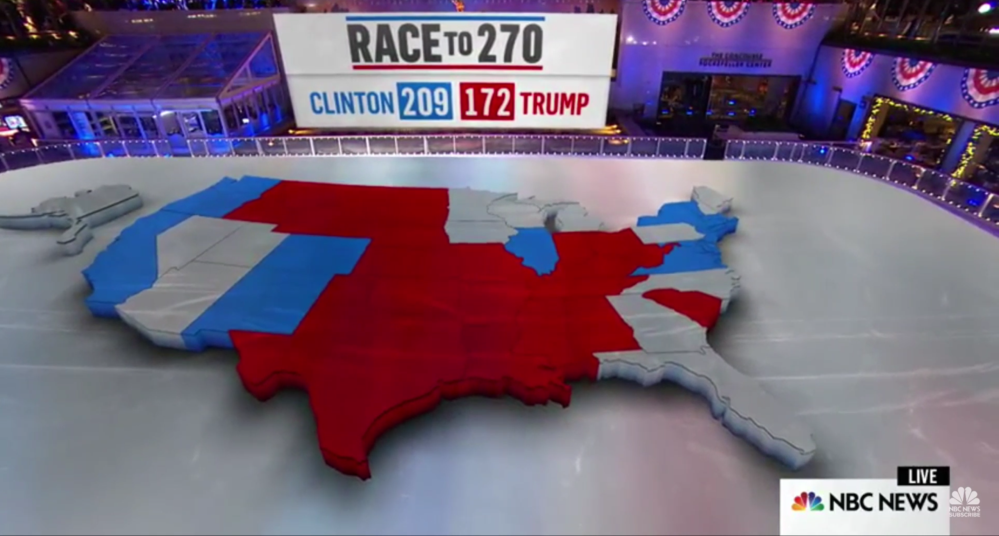

play
stop
pause
go 10s
back 10s
rateup
ratedown

11/9 00:20 ~ 01:19

11/9 03:01 ~ 03:53

11/9 04:01 ~ 04:59
Red Line : The number of times "Donald" or "Trump" has been used per minute
Blue Line : The number of times "Clinton" or "Hillary" has been used per minute